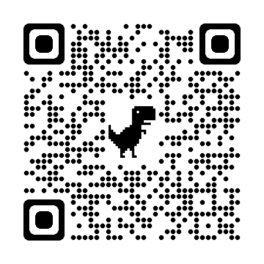

郑康
男 | 23岁 | 前端开发工程师 | 无工作经验 | 北京 | 软件工程 | 本科
手机：15759211192 | 微信：lennonJh | 邮箱：1099571219@qq.com
我的博客 ，目前已有 31 篇技术文章
技能
- 能够使用 HTML5 和 CSS3 进行符合 Web 标准的语义化开发，具有像素级还原设计稿的能力
- 了解原生 JS，了解 ES6 常用特性， 了解 TypeScript 的使用
- 了解 前后端分离 技术，包括 AJAX、跨域、前端路由、Cookie、Session 等
- 了解 Vue 全家桶 的使用，包括 VueCli、VueRouter、Vuex 等
项目经历
-
小柴记账
源码链接 扫码预览一个基于 Vue / VueRouter / Vuex / TypeScript 的移动端单页面应用

该项目 实现了记账、标签管理、数据统计等功能
关于该项目的思路、实现、遇到的问题，我对此做了2篇的博客 总结链接
完成该项目使我对 Vue 的常用特征更加熟悉，同时了解到了 前端工程化流程的重要性
-
Zcore UI
源码链接 项目预览一款基于 Vue3 / Vue-Router / TypeScript / Marked / SCSS 的 UI 框架
提供了⼀些基础组件如 Button、Card、Input、Popover、Toast、Switch 等
最终以 Marked 为基础制作官⽅⽂档,发布于 npmjs.org
完成该项目使我初步的走进了 Vue3 ，了解 Vue3 与 Vue2 的区别
-
金博金客
源码链接 项目预览一款基于 Vue / Vue-Router / Vuex / axios / Less / ElementUI / Markdown 制作的
多人博客共享⽹站，博客内容最终以 Markdown 进行渲染
该项⽬实现 登录/注册，发布/删除/编辑，博客列表展示，查看博客等功能
完成该项目使我了解前后端联调，对收发请求有了更进一步的理解
开源项目
教育经历
~ 厦门理工学院 软件工程 统招本科